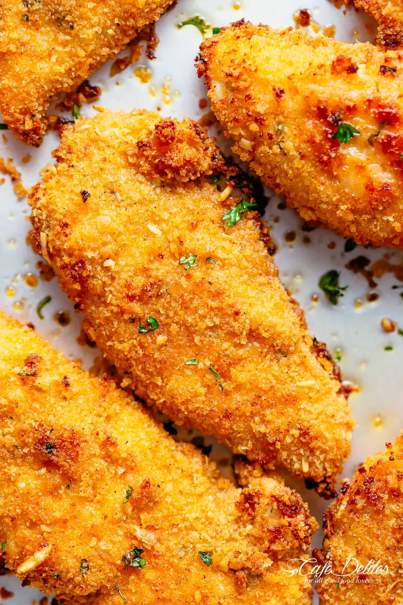

Perfect Chicken Tenders

Description
The perfect chicken tenders recipe that will make your day!
Ingredients
- 1/4 cup Gold Medal™ all-purpose flour
- 1 egg
- 1 tablespoon of water
- 1 cup Progresso™ plain or Italian style panko crispy bread crumbs
- 1/2 cup grated Parmesan cheese
- 3/4 cup granulated sugar
- 1 1/4 lb (20 oz) chicken breast tenders (from two 14-oz packages)
- Your favorite dipping sauce
Steps
- Heat oven to 425°F. Line cookie sheet with foil; spray with cooking spray.
- In shallow dish, place flour. In another shallow dish, beat egg and water. In third shallow dish, mix bread crumbs and cheese. Coat chicken with flour; dip into egg mixture, then coat with bread crumb mixture. Place on cookie sheet.
- Bake 15 to 20 minutes, turning once, until chicken is no longer pink in center and coating is golden brown. Serve with dipping sauce.